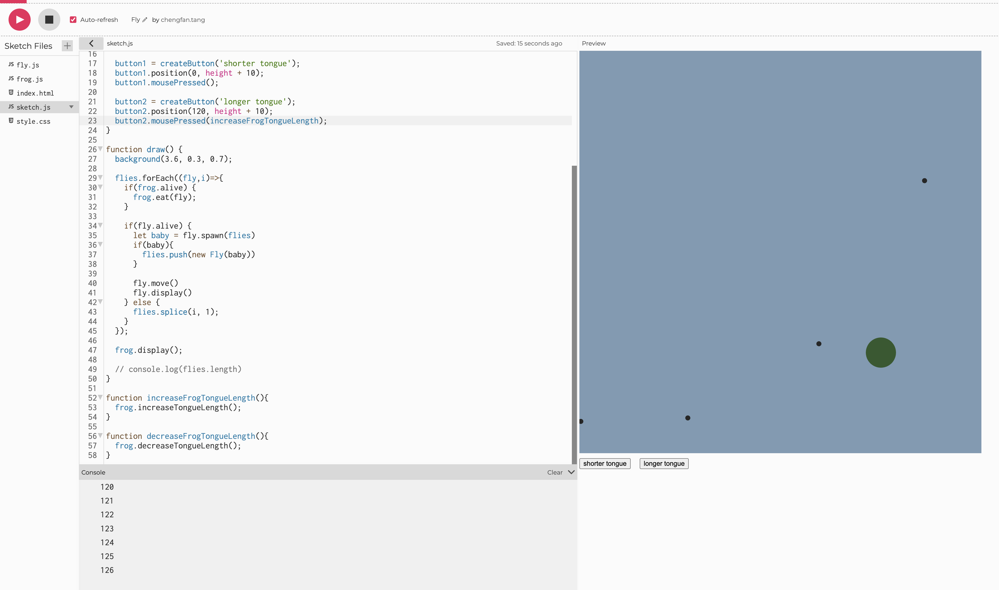
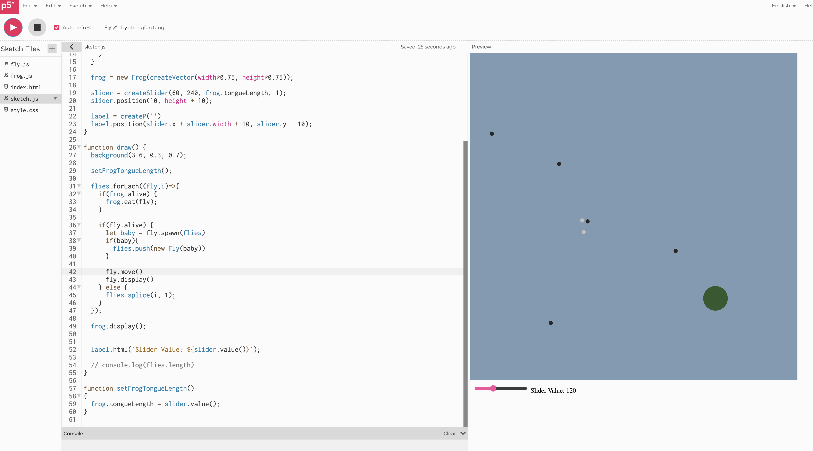
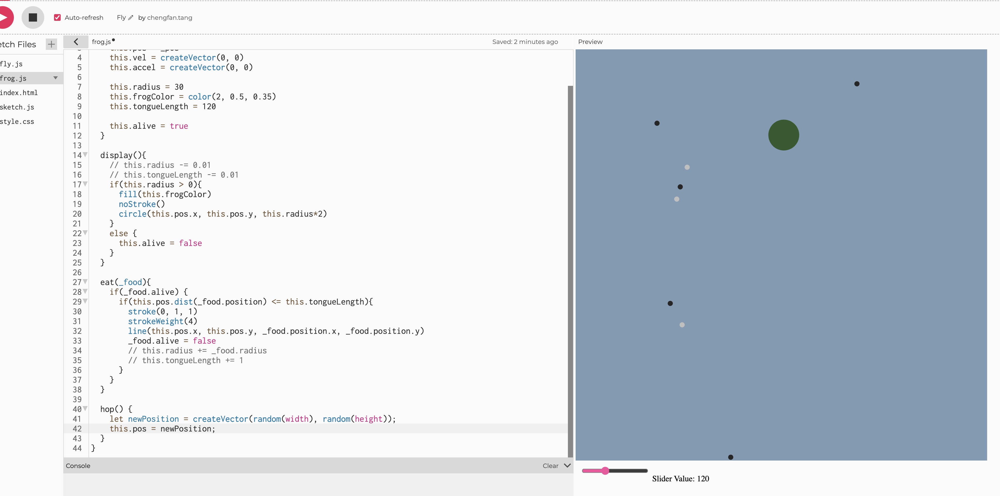
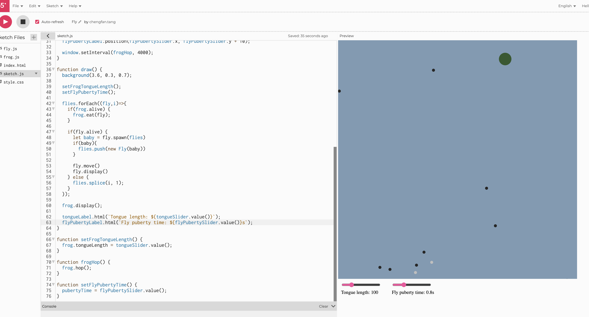
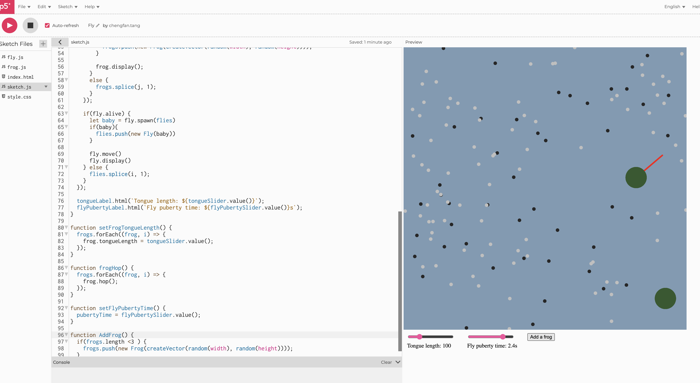
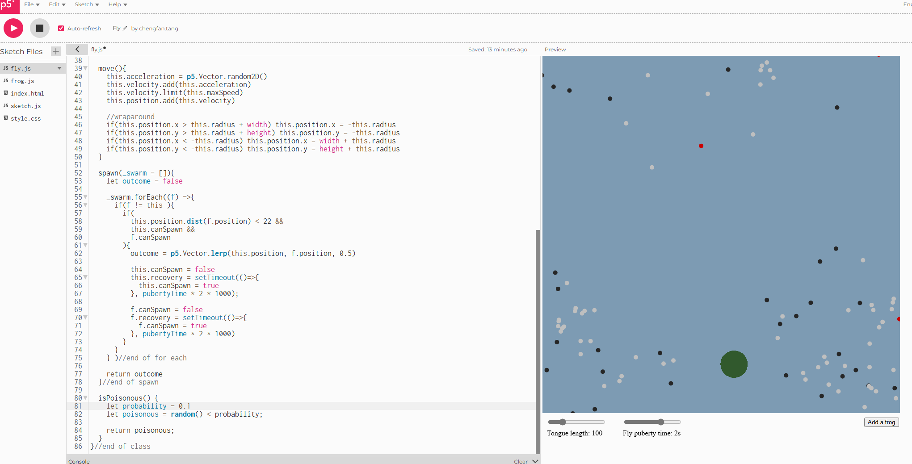
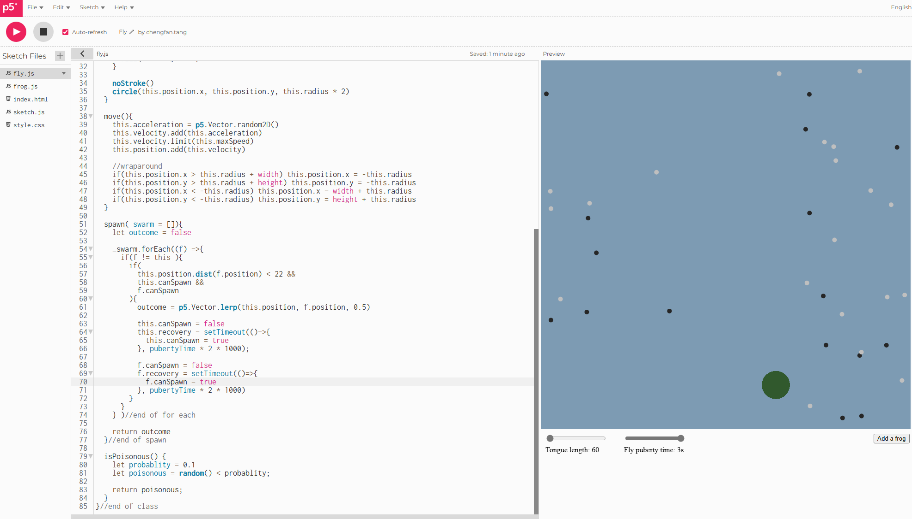
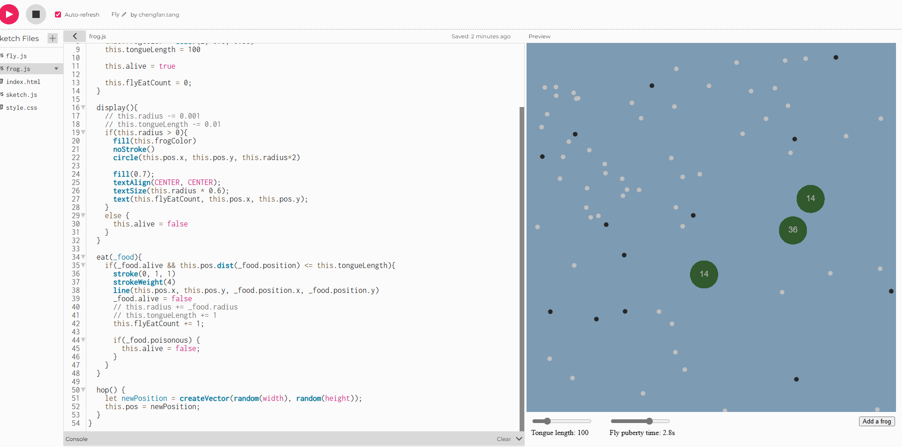
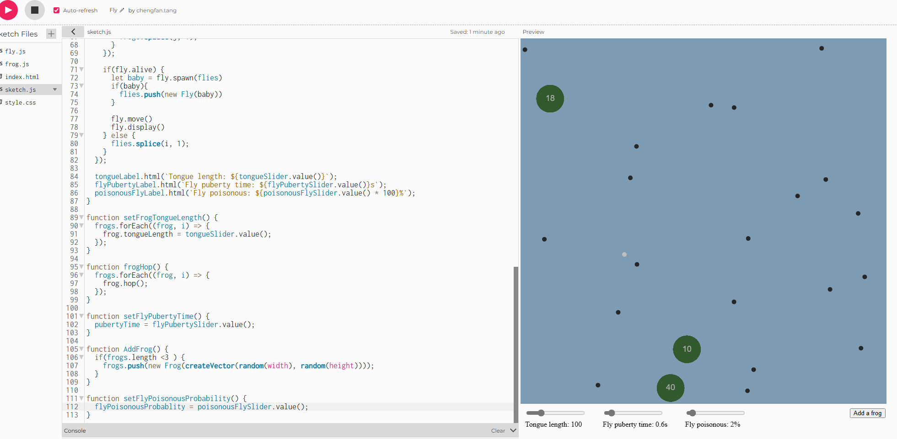

My p5.js creation, Pond, Frog, and Fly
UML Diagram

Process
I continued to work on the pond project since this is a OOP practice. I first disabled frog dying and grow in size as I didn't feel like I need the system to behave that way. My next idea is to add user control to change the tongue length of the frog. I added 2 buttons to increase and decrease the tongue length by 1.

However, I quickly discovered that this is not optimal. Instead, I created a slider to change the tongue length directly, and set the min and max value.

Instead of a stationary frog, I added a hop function so that the frog can hop to a random new location on the canvas every so often. To do this, I set the frog object's position to a new position vector.

I want to add some indirect control about the flies. The puberty or and spawn time is a good choice to control how fast the flies can reproduce. In the same vein of the tongue slider, I created a puberty slider and using a top level variable to store the puberty time.

It would be fun to have more than frog. In order to achieve this, I changed the frog variable to a frogs array to hold multiple frog object. When drawing, I loop all the frog object in the array and check if they are alive, and eat the fly, just like what we did with the flies in the class. I also had to change other functions like setting the frog tongue length so they apply to all frogs. This part took me awhile to understand and convert. In the meanwhile, I added a button to manually add a frog into the pond.

Most of the OOP things are done, I wanted to make the pond system more complex so that the outcome (frog eat all flies, or flies crash my computer) will be more random. I introduced poisonous flies. The basic idea is that, poisonous fly could be spawn by a chance after two flies mating. A frog eats a poisonous fly will cause it to die. We can manually add more frogs to compensate that. I set a property on the fly class to indicate wether it is poisonous. To set it by chance, I use the random() and compare the result with a pre-set number. This is a claver way to achieve probability in javascript (of course I Googled it). I also use red dot to indicate the fly is poisonous.

Something I noticed while working on the code, the flies can mate and spawn very quickly when I set puberty time to a low number, way faster than it should be. I looked many times and realized in the spawn() function, when two flies have baby, the original code only set the recovery of one fly (which was referred by keyword this), but not the other fly (referred by f) from the loop. So I fixed this problem by setting the canSpawn property on the other fly object as well. Things seems working as expected after that.

Next is to achieve frog dying, I added some logic when eating a fly to check if the fly is poisonous, if yes, then set frog.alive to false. If a frog is dead, it will be removed from the frogs array, just like what the original code did to flies. I also added some logic to make new frogs automatically. I set a counter in each frog to track how many flies are eaten, if it goes above certian threshold, a new frog will appear. This is to balance when frogs eat poisonous fly and die too fast.

In the last step, I added a slider to control the probability of spawning a poisonous fly, in a similar way to the tongue length and puberty time.
Reflection
I learned a lot about object-oriented programming through this project. It was challenging to manage multiple objects and their interactions, but it was rewarding to see the system come together. The use of arrays to hold multiple objects and how each object can interact with other objects was a key takeaway.